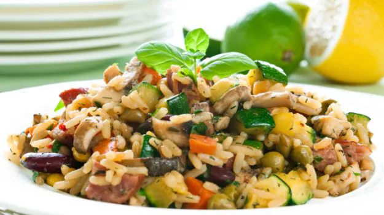
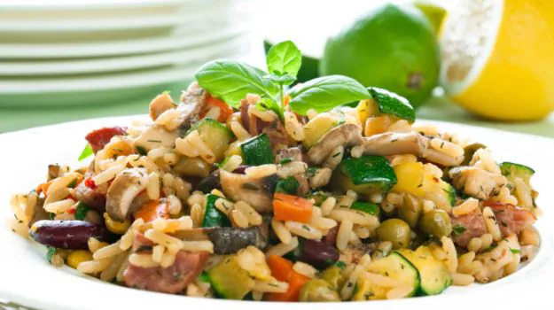

Tours
Culinary Adventure in Italy
 



Italy is renowned worldwide for its rich culinary tradition, where every dish tells a story of tradition, passion, and authenticity. From the bustling streets of Rome to the charming villages of Tuscany, Italian food tourism offers a journey of flavors that captivates the senses and delights the palate.
They Celebrate the art of pizza-making at Pizzafest in Naples, one of the world's largest pizza festivals. Feast on an endless variety of pizzas from top pizzerias, participate in dough-tossing competitions, and learn the secrets of authentic Neapolitan pizza. Join the truffle celebration in Alba, Piedmont, during the annual Sagra del Tartufo. Experience truffle hunting excursions, cooking demonstrations, and truffle-themed feasts showcasing the prized white truffle of Alba.
Street Food Tour in Thailand
Thailand's bustling streets are a feast for the senses, filled with the tantalizing aroma of sizzling woks, the lively chatter of street vendors, and the colorful display of fresh ingredients. Thai street food is not just a culinary experience; it's a vibrant cultural tradition that brings people together to share delicious meals and create lasting memories.
Perhaps the most famous of all Thai street food dishes, Pad Thai is a stir-fried noodle dish made with rice noodles, shrimp or chicken, tofu, bean sprouts, eggs, and a tangy tamarind sauce. Garnished with crushed peanuts, fresh lime, and chili flakes, Pad Thai is a flavorful blend of sweet, sour, and savory flavors. They Celebrate the diversity of Thai street food at annual food festivals and events across the country. From the Bangkok Street Food Festival to the Phuket Food Truck Festival, these events showcase the best of Thai cuisine, with live music, cooking demonstrations, and plenty of delicious food to enjoy.